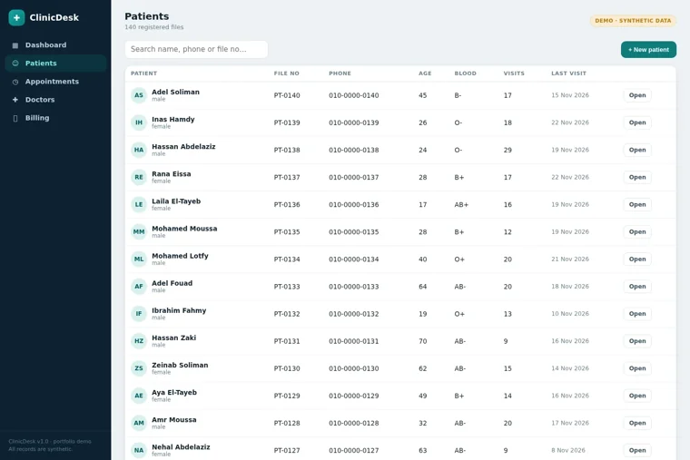
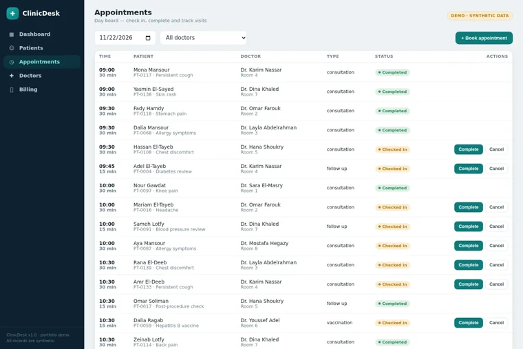
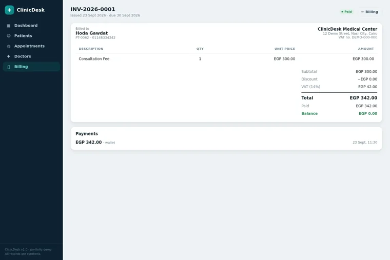

PORTFOLIO DEMO / BUILT / DEMO
ClinicDesk
Daily clinic workflows, in one demonstration system.
 ACTUAL BUILD
ACTUAL BUILDClinicDesk · Dashboard. Synthetic demo records only; no real patients or payments.
The scope
Patient registry, appointment scheduling with server-side conflict checks, visit history, prescriptions, invoices and simulated payment records.
The approach
A React interface sits over an Express API and relational SQLite data. Appointment transitions and billing calculations are handled on the server.
Where it stands
Built / demo. Every patient, clinician, appointment, invoice and payment shown is synthetic. This is not a real medical service or payment processor, and is not presented as production-ready clinical software.
Next chapter
Security, access control, privacy compliance and deployment review are required before any real clinical use.
Inside the build
Open any preview to see the full capture. Captures show test or demonstration content. NG Studio Pro gallery images are earlier test fixtures, not new v0.15.0 audit captures.


